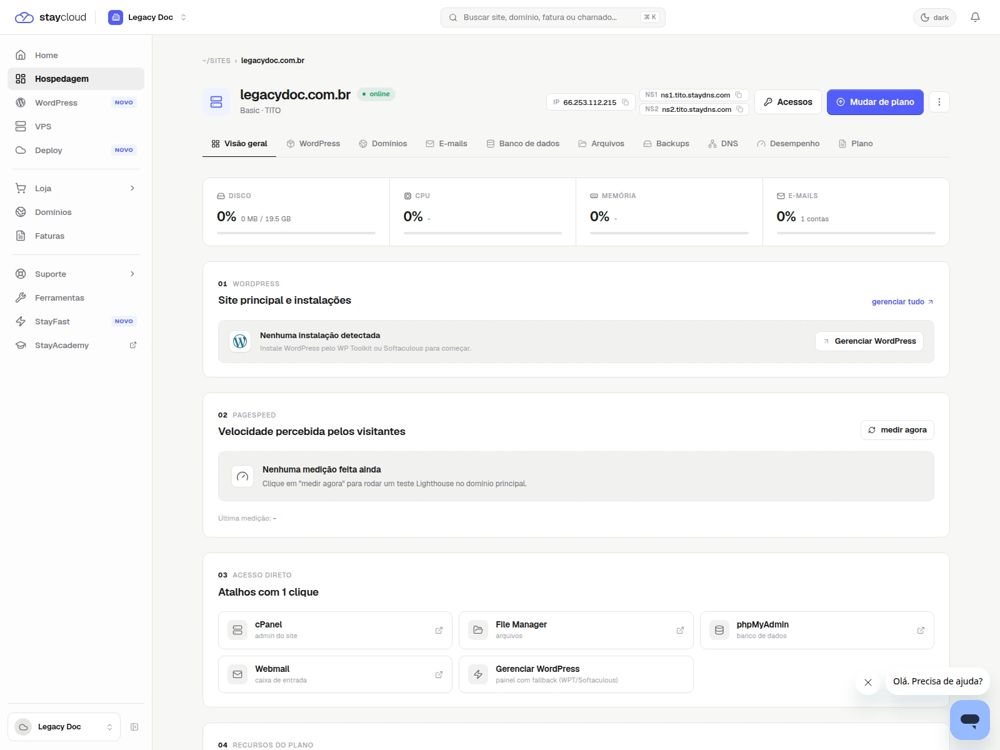
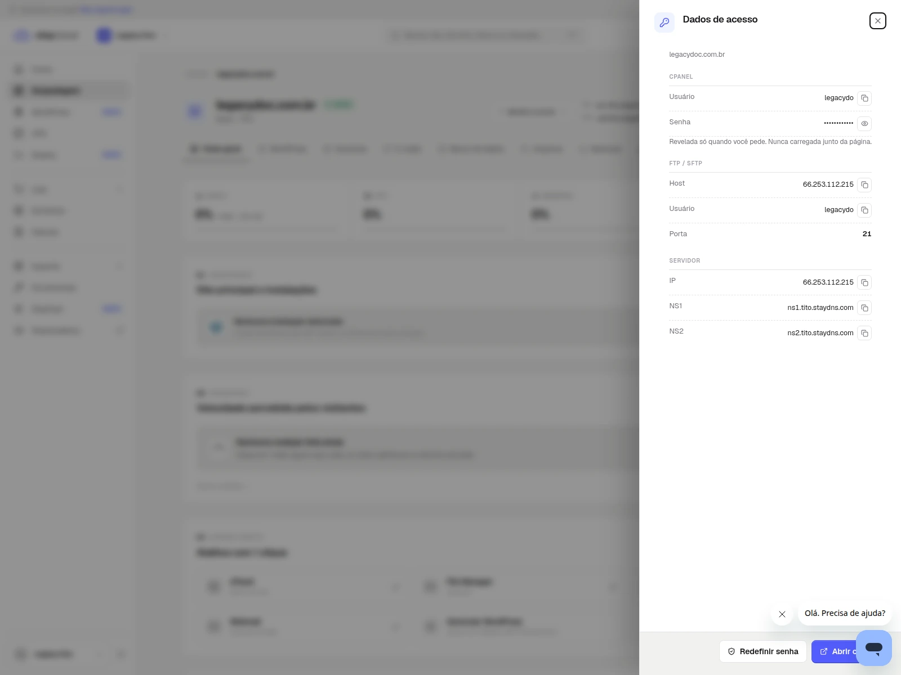
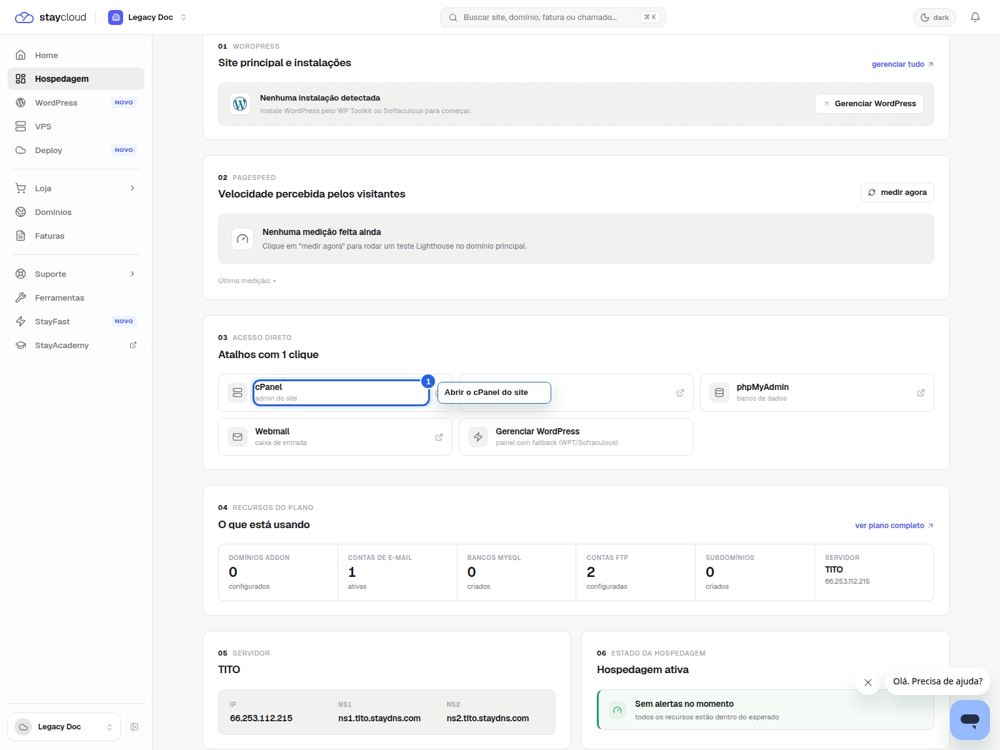
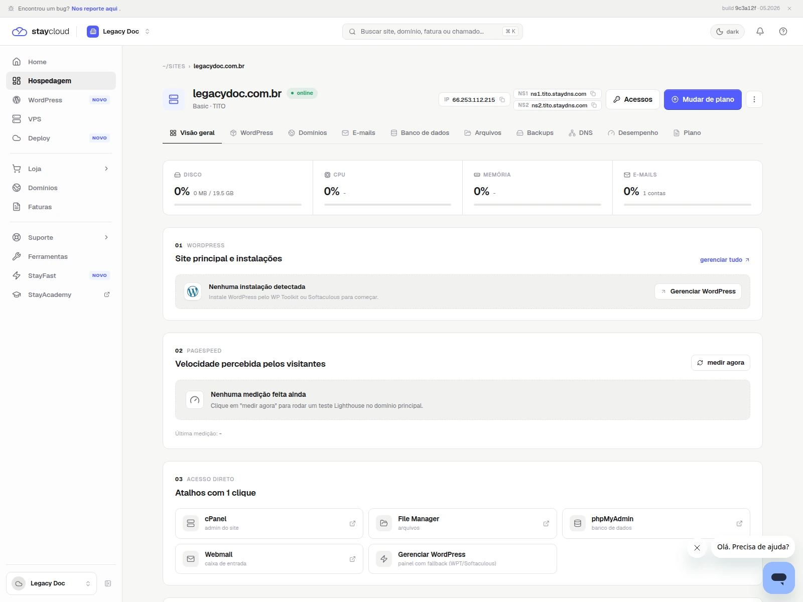

StayCloud · Painel Novo · lote 01
Como encontrar dados do servidor no Painel Novo da StayCloud
Aprenda a localizar os dados técnicos da sua hospedagem no Painel Novo com prints reais e sem expor credenciais.
Rascunho local
como encontrar dados do servidor no Painel Novo da StayCloud
como-encontrar-dados-servidor-painel-novo-staycloud
rascunho local
Objetivo
Aprenda a localizar IP, DNS, cPanel e outras informações da sua hospedagem no Painel Novo sem expor credenciais.
1. Abra a hospedagem correta
Entre no Painel Novo e abra a hospedagem que deseja consultar antes de seguir.

2. Abra a área de acessos
Na hospedagem, localize a área de acessos. É nela que costumam aparecer cPanel, FTP e dados do servidor.

3. Revise os campos disponíveis
Confira os campos exibidos na tela e copie apenas as informações necessárias para o que você precisa fazer.

4. Confirme o contexto do servidor
Use a visão complementar para validar que você está olhando a hospedagem certa antes de continuar.

Alertas e apoio
Ocultar senha, token, cookie e qualquer campo secreto. Se o IP ou o domínio gerar exposição desnecessária, ofusque.
Quando abrir ticket
- se a área de dados não aparecer;
- se a hospedagem estiver incompleta;
- se o painel não mostrar o acesso esperado;
- se você não souber qual informação precisa copiar.
Checklist visual e editorial
- objetivo claro em poucos segundos
- ordem dos passos lógica
- prints com contexto suficiente
- marcações visuais úteis e sem poluição
- linguagem simples para a leitura final